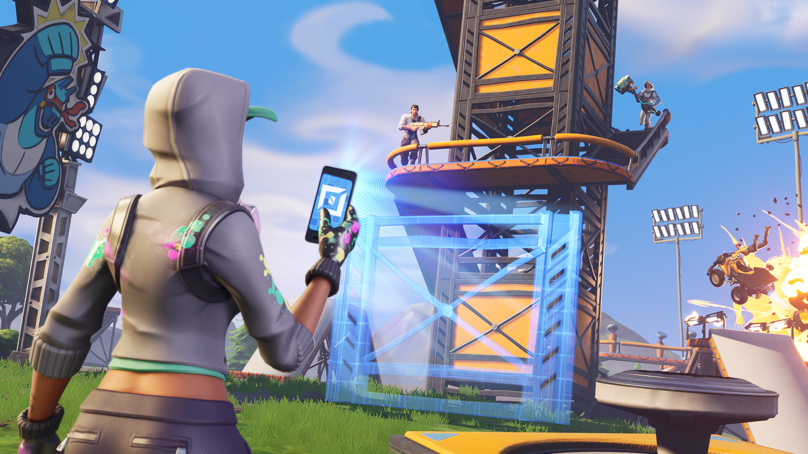

В нём участники смогут возводить новые структуры и элементы, настраивать режимы и создавать мини-игры.
Аудио
Обновление от 19:00: Epic Games официально анонсировала дополнительный режим — он будет доступен игрокам с началом седьмого сезона.
5 декабря в сети появился 15-минутный ролик видеоблогера под ником Lachlan, которому довелось испытать режим «Творчество» (Creative) за несколько дней до анонса. Оригинальное видео уже удалено, но пользователи Reddit и игровые порталы его уже скопировали и изучили.

Режим «Творчество» — развитие летнего одноимённого ивента, в котором пользователям на карте «Королевской битвы» разрешали свободно исследовать местность, собирать ресурсы и строить укрепления. Тогда игроки успели возвести целые города, замки и гоночные трассы в стиле Mario Kart. Вероятно, теперь «Творчество» станет постоянным третьим режимом.
По мнению автора издания Fortnite INTEL, она ещё больше напоминает Minecraft. Он детально изучил «слитое» видео и рассказал, что ждёт игроков.
Лобби на 16 игроков. В опциях дают выбрать, кто может присоединиться к игре: только по приглашению, друзья, друзья друзей.
После подключения участники оказываются в общем хабе. Из него через трещины в земле можно переместиться либо в личные миры, либо в избранные миры. Вероятно, вторые будет создавать сама Epic Games. В личном мире можно выбрать один из четырёх островов. В любой момент можно вернуться в общий хаб при помощи точки разлома.
Острова бывают разных форм и размеров. Неизвестно, генерируются ли параметры автоматически или их можно изменять.
Каждый игрок получает особый телефон — с его помощью можно отредактировать на карте практически любые объекты. Их игрок может копировать, удалять и перемещать.
«Песочница» учитывает память компьютера/консоли. Внизу в игре присутствует интерфейс, отображающий заполненность памяти. Если она достигнет максимума, игра может «вылететь». Разные блоки и структуры будут занимать разный объём памяти.
В меню паузы доступны опции особых условий. Игрок может настроить тип игры, включая режим, ограничение по времени, распределение команд, стартовые локации, модификаторы здоровья, уровень гравитации, точки респауна и другие особенности. Выбранные настройки можно сохранить для конкретной мини-игры.
Участникам доступно меню статистики. Оно отличается в зависимости от выбранного режима. Обычно оно отображает, где находятся другие игроки. В режиме Deathmatch окно статистики выводит число убийств, смертей и помощи при убийствах.
В меню снаряжения доступно несколько блоков. Они включают в себя «шаблоны», «устройства», «оружие», «расходники» и «сундуки».
«Шаблоны» содержат заранее созданные структуры. В их числе как собранные игроком, так и предоставленные самой Epic.
Из меню снаряжения предметы можно переложить в личный инвентарь и вынести на быструю панель. Предметы можно или размещать прямо под собой, или куда-нибудь кинуть.
В «творческом режиме» игрокам будет доступен больший набор видов оружия, ловушек и техники, которой нет в «Королевской битве». Кроме того, пользователям дадут возможность размещать особый вид платформ с разными эффектами вроде притягивания, отталкивания, поворотами и так далее. Отдельно игрокам доступна настраиваемая доска с результатами, которую можно использовать в мини-играх.
Через несколько часов после «утечки» разработчики официально объявили о релизе «творческого режима».
Владельцы «Боевого пропуска» получат доступ к нему 6 декабря, с началом седьмого сезона. «Творчество» станет бесплатным для всех пользователей неделю спустя, 13 декабря.
На выставке The Game Awards компания также обещала некий анонс, связанный с игрой — вероятно, речь идёт о третьем режиме